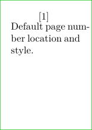
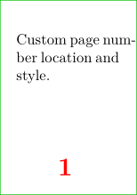

Contents
Summary
The command \setuppagenumbering is used to configure the pagination (style and location).
Settings
| \setuppagenumbering[...=...,...] | |
| alternative | singlesided doublesided |
| page | see \page |
| strut | yes no |
| command | oneargument |
| left | command |
| right | command |
| state | start stop |
| width | dimension |
| location | header footer left middle right inleft inright margin inmargin atmargin marginedge none |
| style | style command |
| color | color |
| Option | Explanation | ||||
|---|---|---|---|---|---|
| alternative |
|
||||
| location |
|
||||
Description
To remove page numbering entirely, set an empty
location
:
\setuppagenumbering[location=]
Note: Configure page number conversion (Roman or other numbers) in \setupuserpagenumber.
Examples
Pagina in brackets
-
\setuppapersize[A10] \setuppagenumbering[left={[},right={]}] \showframe[edge] \starttext Default page number location and style. \stoptext
- 
Custom location and style
-
\setuppapersize[A10] \setuppagenumbering[location={footer,middle},style=\bfc,color=red] \showframe[edge] \starttext Custom page number location and style. \stoptext
- 
Notes
See also
- \page
- strc-pag.mkiv
- \setupuserpagenumber e.g. number conversion
- \setuppagenumber scope (by section, by text) and construction (section number)
- \setupheader